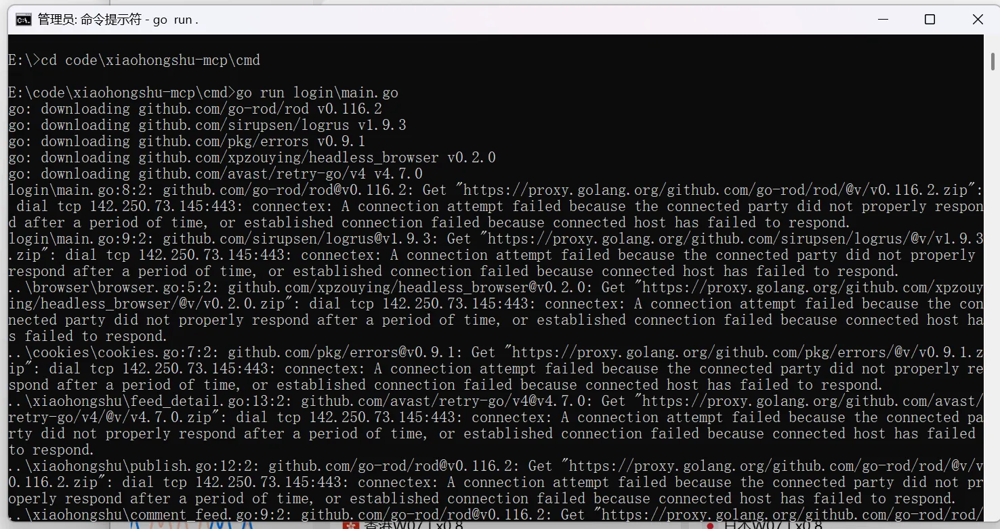
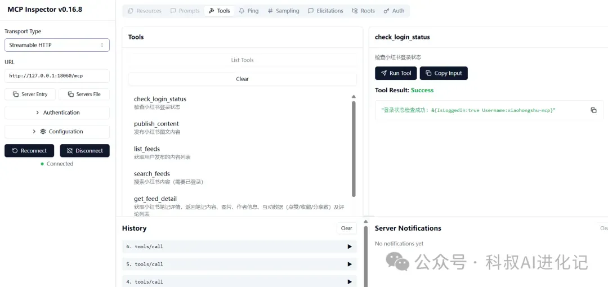
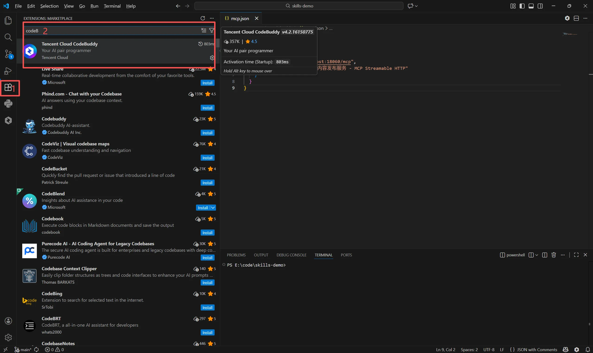
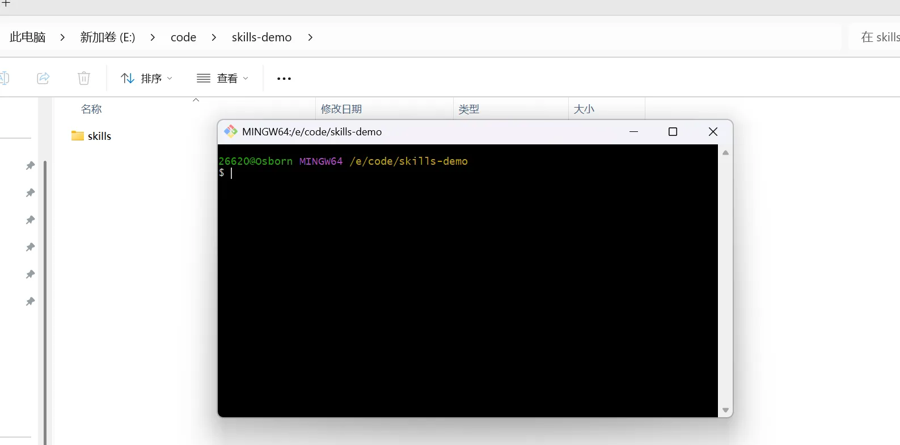
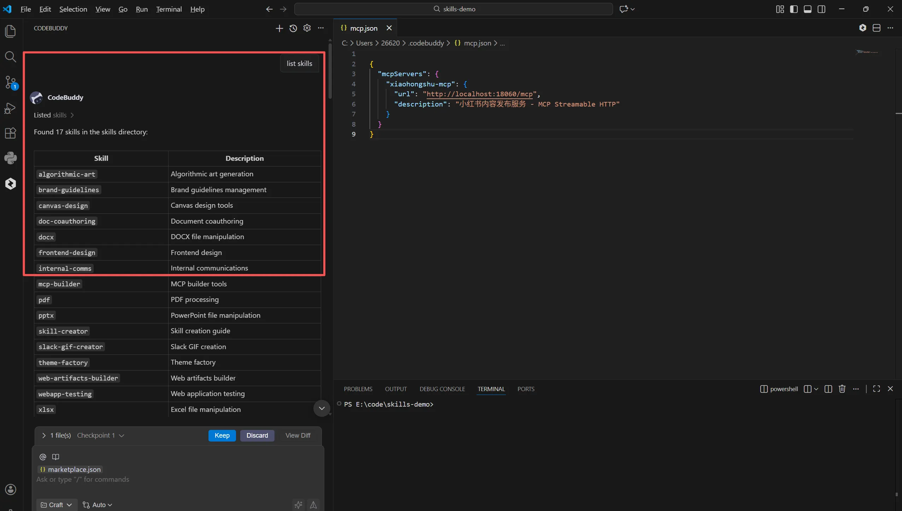
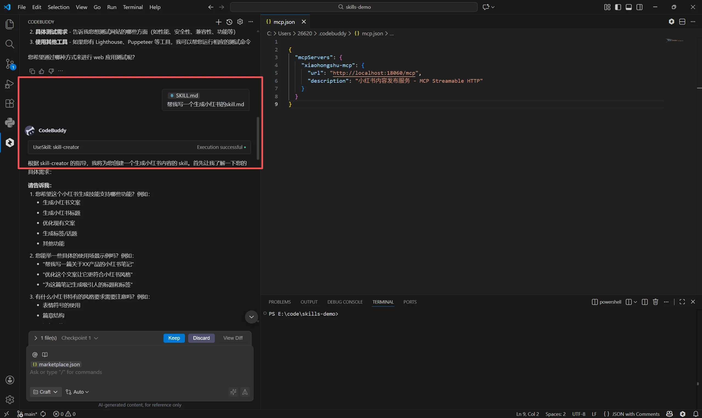
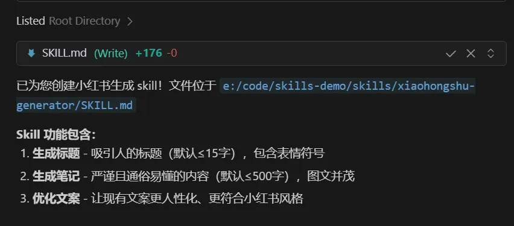
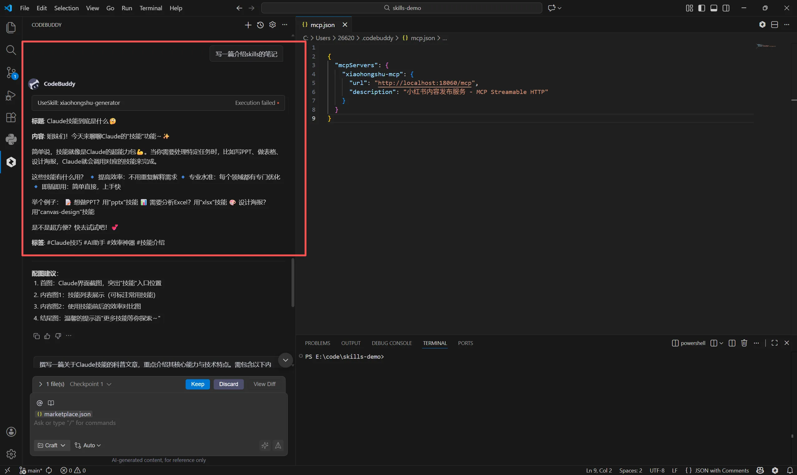
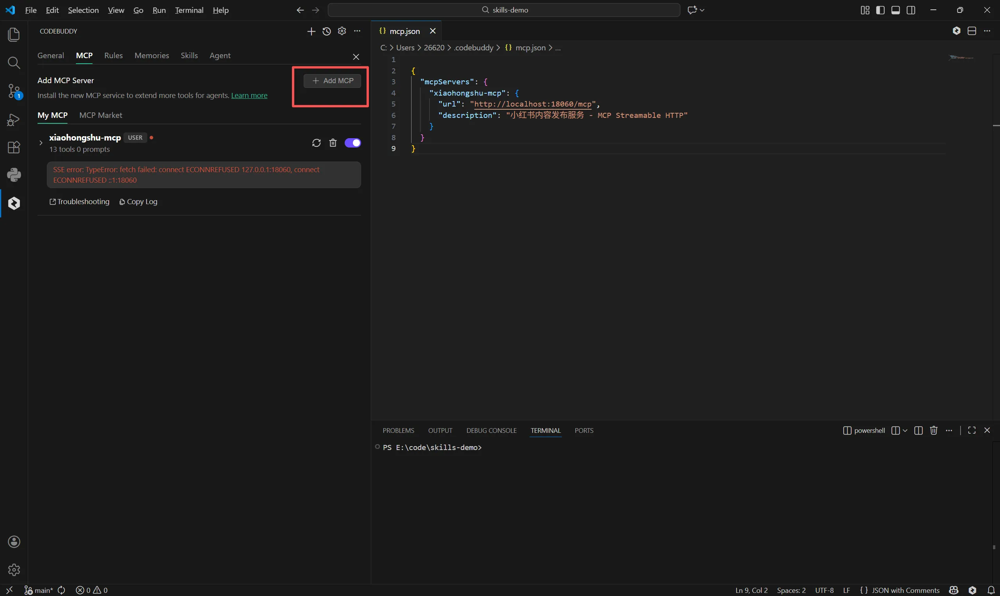
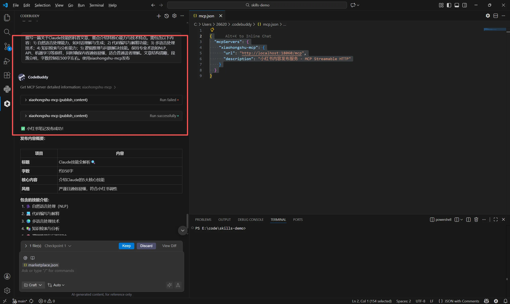

参考资料如下，中间有些步骤不是很懂，磕磕巴巴还是跑出来了，根据我碰到的问题重新整理了一下步骤整体技术栈：vscode+CodeBuddy + skills+MCP
整体的思路：
- 拉取github的小红书自动发布MCP服务，启动起来，登录小红书
- 在vscode中安装CodeBuddy，拉去skills包，新建一个生成小红书的skills
- 在vscode的CodeBuddy添加上的启动的MCP服务
- 在vscode的对话框写出自己想要发布的小红书内容主题，说明使用什么MCP服务
参考资料：
搭建教程：https://cloud.tencent.com/developer/article/2586272
MCP 启动教程：
1. 启动MCP服务
同MCP启动教程
作者的github项目我是挂梯子拉取项目到vscode中启动的，有碰到的问题合集也在作者的评论下可以找找，我碰到的其他问题
执行下载的mcp服务时,出现报错，执行的时候一直下载不成功。
1 | go run login\main.go |

问题原因：默认拉去的源可能是国外的（我用了科学上网，但是不知道为啥还是下载不下来）
解决办法：切换拉取源为国内的
1 | # 使用阿里云镜像下载 |
启动好MCP服务，测试check_login_status的状态为Success就ok

2.创建生成小红书的skill
2.1 环境准备
需要本地安装git
1 |
|
安装node
1 | #如未安装，可通过下面指令安装 |
安装CodeBuddy，两种方式，任选其一
方式一： Vscode 插件市场安装CodeBuddy插件（我用的这种）

方式二: 安装CodeBuddy IDE, 安装方法请参考官网
https://copilot.tencent.com/?fromSource=gwzcw.9638738.9638738.9638738
2.2 配置skills实例
以官方 Anthropics 官方 Skills 开源仓库 https://github.com/anthropics/skills 为例，下载此skills开源仓库
-
创建一个文件夹skill-demo，在目录下右键启动git bash
-
下载开源skills库
1 | git clone https://github.com/anthropics/skills.git |

- 查看是否下载成功,在codeBuddy对话框输入list skills，出现skills目录即为成功

- 写一个生成小红书的skill,出现创建成功和创建的路径即为成功，这里建议细化一下生成的小红书生成的要求，我这里只做示范。或者可以找找现在很多人写的比较成熟的skill包，下载到项目里即可。


- 检查skill是否生效，使用skill创建一篇小红书笔记

2.3 发布小红书
- 在codeBuddy的设置中找到MCP, 添加MCP
1 | { |

打开xiaohongshu-mcp服务（我这里没有启动服务，所有显示没连上）
- 写明小红书主题和采用的mcp服务，就能同步发出去了。这里如果之前的skill写的比较完善，主题字数什么的都可以简单写，我创建的skill很潦草，所以提示词很多才能写出来比较ok的笔记。

写在最后，现在有一些新的技术可以实现自动发布小红书，也就是openclaw或者阶跃AI等，可能后续会做一些尝试。